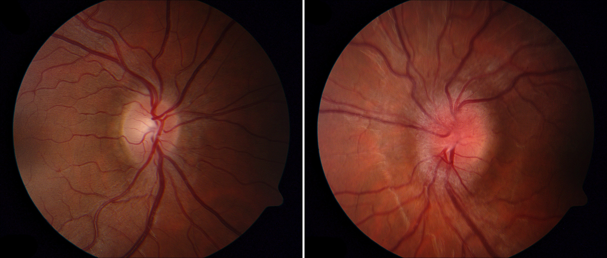
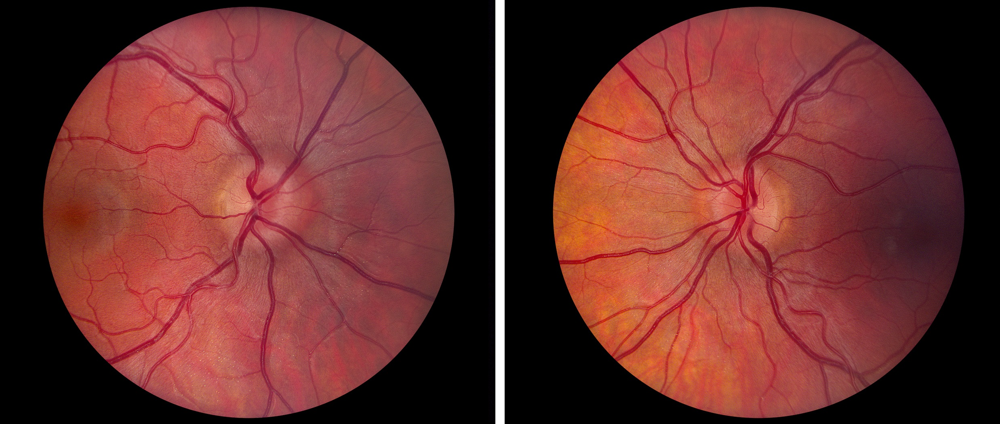
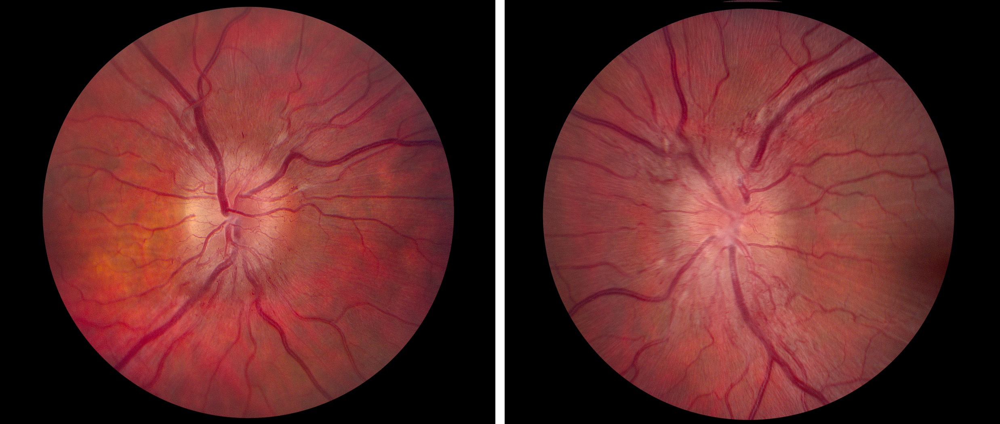
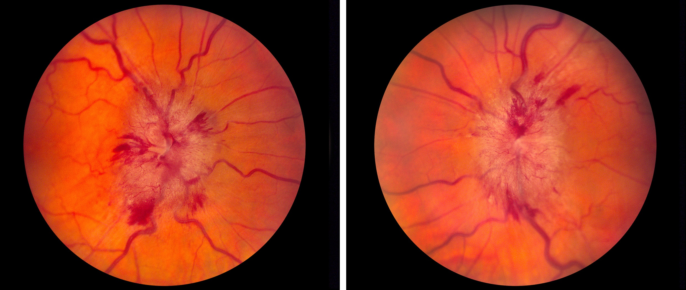
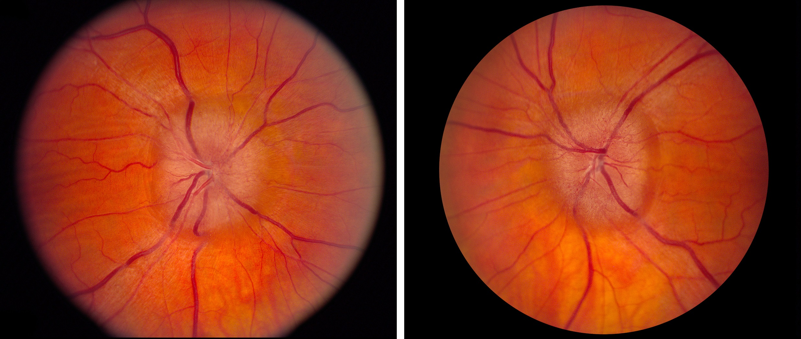
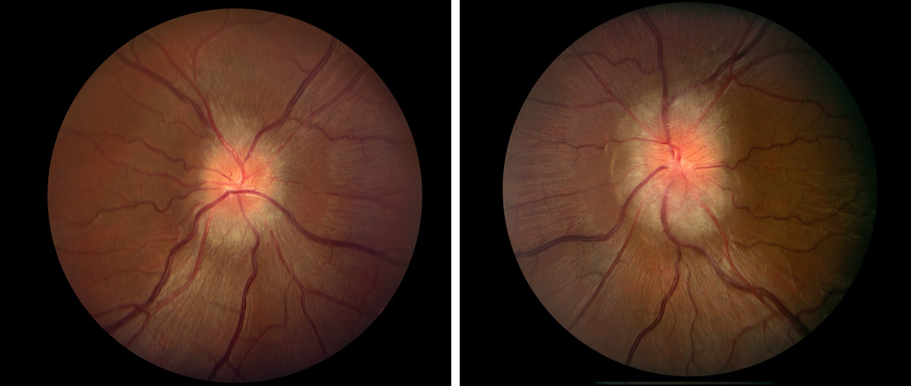
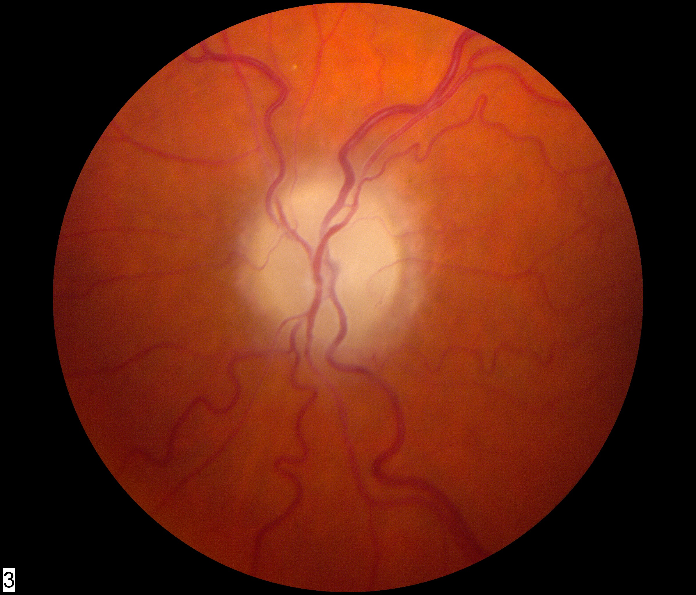
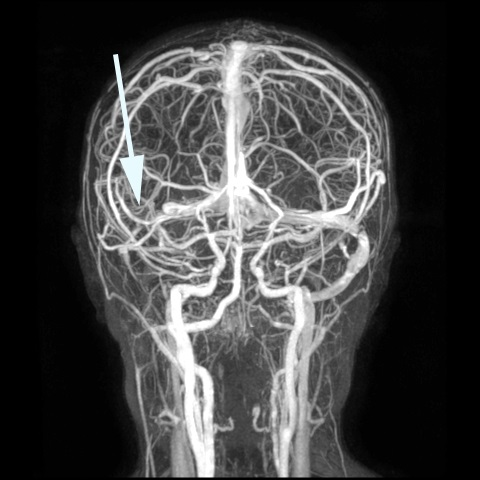

Idiopathic Intracranial Hypertension (Pseudotumor Cerebri)

- Increased intracranial pressure (ICP) not explained by discoverable causes
- Attributed to reduced outflow at the arachnoid granulations or dural venous sinuses
- Overweight women of child-bearing age are most at risk
- Papilledema must be present or must have been present
- Optic neuropathy may result from sustained high ICP (“post-papilledema optic neuropathy”)
-
Patient may be asymptomatic or report one or more of these symptoms
- Persistently blurred vision
- Episodic blackouts of vision lasting seconds in one or both eyes, occurring spontaneously or on standing (“transient obscurations of vision”)
- Flickering lights in peripheral visual field
- Head, neck, or interscapular pain
- Pulsatile tinnitus
- Diplopia
- Normal visual acuity unless papilledema is marked or atrophic
- Normal visual field, enlarged blind spot, or nerve fiber bundle defects
- Acquired optic disc elevation owing to high ICP (papilledema), usually in both eyes, but may be asymmetric or rarely confined to one eye
- Papilledema should be graded according to severity, from mild to moderate to severe, and as either chronic non-atrophic or chronic early atrophic or late atrophic
- Normal neurologic examination except for findings attributable to high ICP
- No structural alterations evident on brain imaging except those related to high ICP
- Elevated lumbar puncture opening pressure (>25cm H20 in adults, >28cm H20 in children) with normal fluid constituents
-
Trap: falsely elevated CSF opening pressure is common in prone positioning, an unrelaxed patient, ketamine sedation, or otherwise improper technique during lumbar puncture







- Congenitally elevated optic discs (“pseudopapilledema”) (See Elevated Optic Disc)
- Diabetic papillopathy
- Optic neuritis
- Arteritic and non-arteritic ischemic optic neuropathy
- Hypertensive optic disc edema
- Leber hereditary optic neuropathy
- Infiltrative (neoplastic) optic neuropathy
- Central retinal vein occlusions
- Exclude congenitally elevated optic discs and causes of acquired optic disc elevation other than papilledema
-
Exclude exposure to medications that can raise ICP
- Tetracycline and its derivatives, especially minocycline
- Retinoids
- Lithium
- Danazol
- Cyclosporine
- Growth hormone
- Leuprolide
- Rapid taper of corticosteroids
- If no causative medications are found, order brain CT and CT venography (CTV) or MRI and contrast MR venography (MRV) to exclude mass lesions, hydrocephalus, and dural venous sinus malformations, fistulas, or thrombosis
- Perform lumbar puncture if brain imaging is normal
- Diagnose IIH only if papilledema is present, brain imaging shows no abnormalities apart from those attributable to high ICP, and lumbar puncture shows an elevated opening pressure and normal constituents
-
Trap: if the optic discs have developed profound pallor, elevation will not appear even in the presence of high ICP because there are too few intact axons to develop swelling from axoplasmic stasis, the principal contributor to papilledema!
- Reduce ICP with acetazolamide in doses up to 3gm/day if the patient is not allergic to sulfa medications
- Prescribe furosemide or topiramate if the patient is intolerant to acetazolamide, although their efficacy is not great
- Recommend weight loss
- Perform ventriculoperitoneal (VP) shunt, optic nerve sheath fenestration, or venous sinus stenting only for severe papilledema and vision loss or medically-refractory papilledema and worsening vision attributable to papilledema
- Personal preferences govern the choice of shunt, sheath, and stent, as no comparative trials have been performed
- Consider bariatric surgery for refractory IIH and morbid obesity, but…
-
Trap: bariatric surgery carries its own medical problems and may impair an existing VP shunt and preclude future placement of a VP shunt

- Patients with mild manifestations can be managed without intervention to lower ICP but must be monitored
- Weight loss as little as 6% may be effective; the role of bariatric surgery in morbidly obese patients with IIH is unsettled
- Most patients with IIH can be managed successfully with oral carbonic anhydrase inhibitors (acetazolamide is the first choice) with restoration of vision
- IIH remits spontaneously after months to years with vision generally well preserved unless entry visual dysfunction is advanced at diagnosis
- Surgical options (cerebrospinal fluid shunt, optic nerve sheath fenestration, venous sinus stenting) should be reserved for medically-refractory papilledema
- Ventriculoperitoneal (VP) shunt with a programmable valve is considered the first surgical choice except in pregnancy and scarred abdomen
- VP shunt reliably lowers ICP, carries no risk to vision, and has low neurologic risks
- VP shunt malfunction in IIH probably occurs in fewer than 20% of cases, but generates many patient visits for suspected malfunction (“false alarms”)
- Ventriculopleural shunt is an alternative to VP shunt in pregnant patients or in those with a scarred peritoneum
-
Trap: lumboperitoneal shunt is no longer performed because of frequent complications
- Optic nerve sheath fenestration may protect the optic nerve, but does not lower ICP, and carries surgical risks to vision
- Role of venous sinus stenting to relieve high ICP is still uncertain because of limited data
- Optic nerve-related vision loss often improves following these procedures, but…
- Despite prompt and competent intervention, vision may not recover and may even worsen over time, especially when papilledema is atrophic and optic nerve-related vision loss is severe at the time of diagnosis